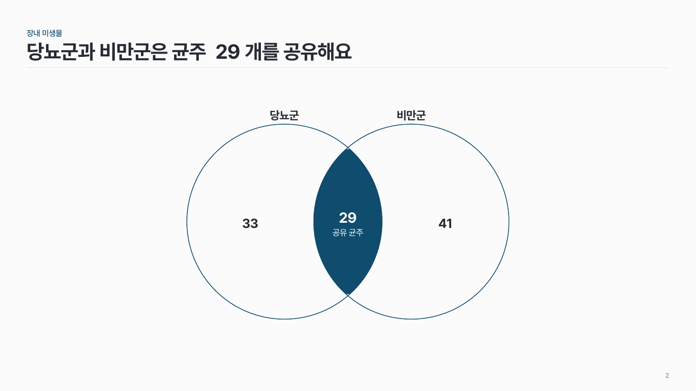

벤 다이어그램 struct-04
같은 크기의 원 2–3개를 겹치고, 모든 집합이 겹치는 곳만 진하게 칠해 수를 적어요.

이 시안
집합 3개 · 둘만 겹치는 곳 · 교집합 이름
슬라이드 제목: 세 군이 모두 가진 균주는 12개예요
언제 쓰나
2–3개 집합의 겹침이 핵심 메시지일 때요. 공통 유전자, 공유 균주처럼 교집합의 크기나 내용을 보여 줄 때 맞아요.
구성
- 같은 지름의 원 2–3개를 지름의 35% 안팎만큼 겹쳐요.
- 원 바깥에 집합 이름.
- 영역마다 수를 적어요.
- 모든 집합의 교집합만 진한 색으로 채우고 수를 흰 글씨로.
지킬 것
- 원은 3개 이내, 크기는 모두 같게. 원 크기로 집합 크기를 나타내지 않아요.
- 집합 이름 8자 안팎.
- 영역 글은 한 줄.
하지 말 것
- 원마다 채도 높은 다른 색을 쓰지 않아요.
- 교집합 밖에 설명 문장을 길게 넣지 않아요.
PowerPoint에서
겹친 부분만 칠하려면 원 두 개를 함께 선택하고 도형 서식 > 도형 병합 > 교차를 눌러요.
더 볼 게시물 Instagram @peedori_
시안 비교
같은 내용을 옵션만 바꿔 그렸어요. 그림을 누르면 크게 보여요.
A집합 3개 · 둘만 겹치는 곳 · 교집합 이름
슬라이드 제목: 세 군이 모두 가진 균주는 12개예요

B집합 2개
슬라이드 제목: 당뇨군과 비만군은 균주 29개를 공유해요